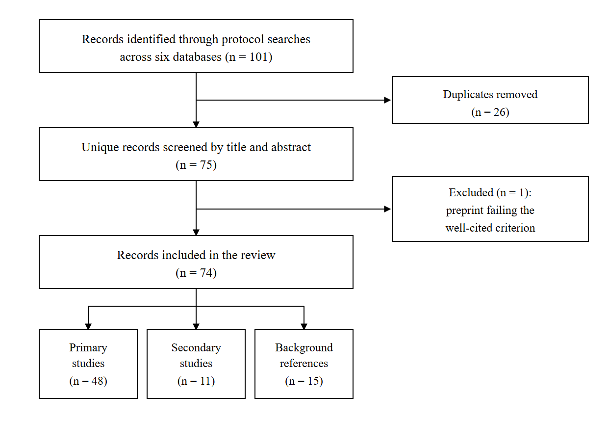
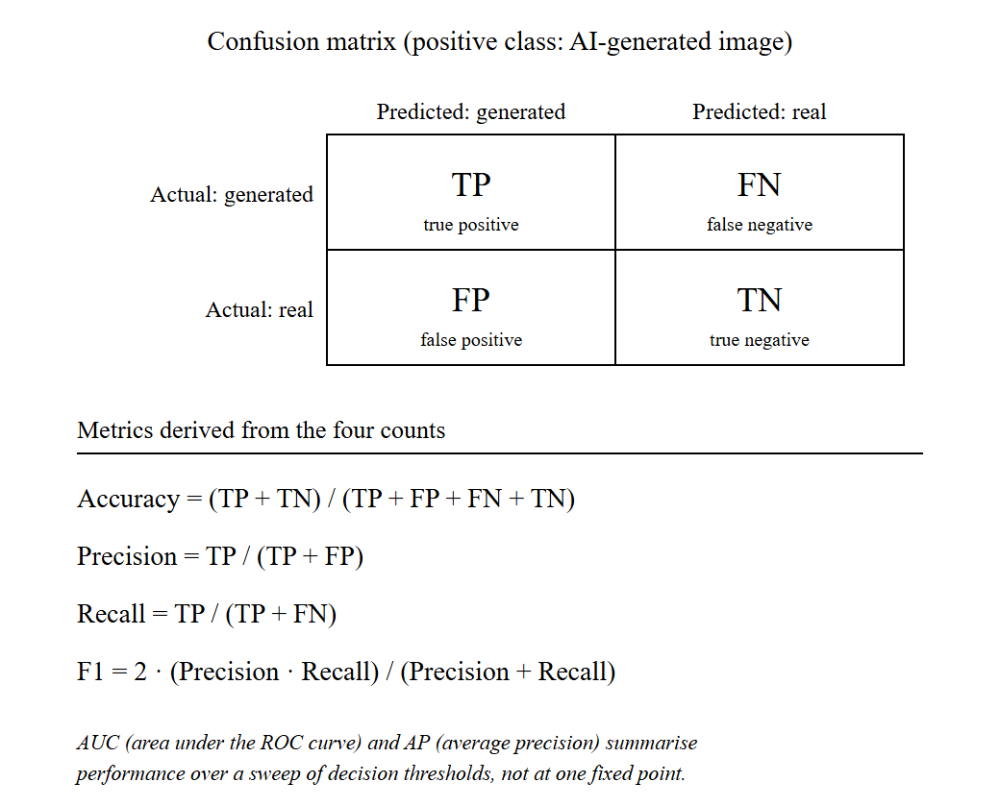

Deep Learning for AI-Generated Image Detection: A Review of CNN, Vision Transformer, and Explainable Approaches
Guide: Dr. Richa Gupta
Text-to-image generation is now cheap and publicly available, and its output is increasingly hard to separate from photographs by eye. The consequences — fabricated evidence, misinformation, impersonation, and contamination of image corpora scraped from the web — arrive faster than manual inspection can handle, so automated detection has become a working requirement. This paper reviews deep learning approaches to detecting AI-generated still images. Following a protocol fixed before collection, six databases were searched with eight query seeds; 48 primary studies published between 2019 and 2026 were read in full and entered into a structured extraction table, with video and audio deepfake detection excluded. The surveyed work is organised by the origin of the evidence a detector uses: handcrafted and frequency-domain forensics, convolutional networks trained by transfer learning, transformer and attention-based models, detectors built on frozen vision-language representations, and explainability-oriented work. Datasets, benchmarks and evaluation metrics are compared in the same way. The central finding is that generalisation across generators is a structural problem, because much of what a detector learns belongs to a particular generator's design: reported accuracy falls from 99.9% on a training generator to 54.9% on an unseen one, and from 92.77% on a standard benchmark to 65.77% on realistic in-the-wild images. The strongest cross-generator results share frozen general-purpose representations, derived inputs, or diverse training data. Cross-generator evaluation is reported by 36 of the 48 studies and explanation analysis by four, but almost never together — the gap that motivates the study proposed here.
Keywords: AI-generated image detection; synthetic image forensics; convolutional neural networks; vision transformer; transfer learning; explainable AI
Generative adversarial networks (GANs), proposed in 2014, were the first widely adopted family of models able to produce photograph-like images by training a generator against a discriminator [1]. Successive refinements pushed output quality far enough that synthesised human faces hold up under close inspection [2]. Diffusion models then changed the situation again: instead of an adversarial game, they learn to reverse a gradual noising process [3], and the latent-space formulation made text-conditioned generation cheap enough to run on ordinary hardware and to release publicly [4]. Producing a convincing synthetic photograph is therefore no longer a specialist skill — it takes a text prompt and a few seconds. Images made this way already circulate on public social platforms in enough volume to be collected into research datasets [5].
The problems that follow are practical rather than hypothetical. Synthetic imagery can be used to support false claims in reporting, to fabricate apparent evidence of events that never took place, and — because generated faces are convincing enough to have attracted a detection literature of their own [6] — to impersonate people. All of this sits inside the older field of media forensics, which until recently was concerned mainly with edited rather than wholly synthesised images [7]. A less obvious consequence is that large image corpora scraped from the web can no longer be assumed to contain only camera output, since the platforms that host synthetic images are the same ones such corpora are drawn from [5]. Recent surveys treat detection of AI-generated media as a distinct problem for these reasons [8].
Manual inspection does not scale to this. The volume of images uploaded to a large platform in a single day is far past what human reviewers could examine, and the evidence a detector actually relies on is often not visible to a viewer at all: much of it consists of statistical traces left by the generator's upsampling operations, which appear in the frequency spectrum rather than in the picture itself [9, 10]. Automated detection is therefore the only workable option. It is also an open research problem rather than a solved one — on a benchmark deliberately built from realistic in-the-wild images, detectors scoring 92.77% mean accuracy on a standard benchmark fall to 65.77% [11].
The central difficulty is generalisation across generators. A detector trained on one generator family usually performs well on that family and considerably worse on others. Early work was encouraging on this point: a ResNet-50 trained only on ProGAN images reached 90.8 mAP averaged over eleven unseen GAN test sets, though the authors qualified the result as holding "for now" [12]. The arrival of diffusion models largely ended that transfer. GAN-trained detectors lose 15.2% AUROC on average when tested on diffusion images [13], and accuracy on uncompressed diffusion output has been reported at roughly 60-76%, falling to about 50-61% once images are compressed and resized in the way a social platform would do [14]. The same pattern repeats within the diffusion family: a ResNet-50 reaching 99.9% accuracy on the generator it was trained on scores 54.9% on a different one [15]. One reason is that many detection cues are properties of a particular generator design rather than of synthetic images in general — a widely used spectral cue can be removed by changing the generator's final upsampling layer, taking detection from 84.8-99.8% down to 0-0.3% [16].
This review surveys published work on detecting AI-generated still images. Its scope is deliberately narrow: single images only, with video and audio deepfake detection excluded; work published between 2019 and 2026; and studies that report quantitative results, so that performance claims can be placed side by side. It differs from existing reviews in two respects. Earlier overviews are either broader in medium, covering audio and video alongside images [8], narrower in subject, addressing GAN-generated faces specifically [6], or predate diffusion-based generation altogether [7]. Second, cross-generator evaluation and explainability are treated here as properties worth recording per study rather than as discussion points: the comparative table states, for every surveyed work, whether the detector was tested on generators absent from its training data, and what limitation the authors themselves acknowledge.
The contributions of this review are:
Cross-Generator Tested? and Key Limitation columns, so that headline figures are read alongside the conditions that produced them.The remainder of the paper is organised as follows. Section 2 describes how GANs and diffusion models generate images and what artefacts each tends to leave behind. Section 3 presents the taxonomy of detection approaches. Section 4 compares the datasets and benchmarks in common use, and Section 5 covers evaluation metrics and reporting practice. Section 6 presents the master comparison table and the trends drawn from it. Section 7 sets out the open challenges and the gap analysis, and Section 8 concludes with the case for the proposed follow-on study.
A detector is only intelligible once it is clear what it is looking for. This section describes how the two generator families that dominate the literature actually produce an image, and then traces where the detectable traces in their output come from. The detection methods that exploit those traces are surveyed in Section 3; the concern here is the mechanism, not the detector.
A generative adversarial network trains two networks in opposition. The generator maps a random vector to an image. The discriminator is shown a mixture of real and generated images and tries to separate them. The two are updated in alternation, so the generator never receives a target image to copy — its only training signal is the discriminator's current opinion of its output [1]. Nothing in this arrangement requires the generator to match the statistics of real photographs beyond the point where the discriminator stops complaining, which is the observation Section 2.3 builds on.
Structurally, the generator is a stack of layers that enlarges a small feature map step by step until it reaches full resolution. Later architectures kept that overall shape and changed what happens inside it. StyleGAN2, for instance, redesigned the generator's normalisation and layer structure specifically to remove characteristic artefacts that had been visible in the previous version's output, and reported improved quality on high-resolution face synthesis [2]. Two consequences follow. Synthetic faces became difficult to dismiss by eye, and generator design became partly an exercise in removing whichever traces someone had recently pointed out.
Diffusion models replace the adversarial game with a two-stage construction. The forward process takes a real image and repeatedly adds a small amount of Gaussian noise, over many steps, until the image is indistinguishable from noise. This process is fixed and involves no learning. The model is trained to invert it: given a noisy image and the step it belongs to, predict the noise that was added, so that the step can be undone. Generation then starts from pure noise and applies the learned reverse step repeatedly until an image emerges [3]. Because each step is a small correction rather than a single leap, training avoids the instability of adversarial optimisation.
Running many denoising steps at full resolution is computationally expensive. Latent diffusion addresses this by moving the process into the compressed latent space of a pretrained autoencoder: the diffusion model operates on a small latent representation, and a decoder expands the final latent back into pixels. The same work introduced cross-attention conditioning, which is the mechanism that lets a text prompt steer generation [4]. This is the design underneath the publicly released text-to-image systems, and its split into a latent diffusion process followed by a fixed decoder matters for detection, as the next subsection explains.
Both families construct an image by repeated upsampling, and this is the single most studied source of detectable traces. Convolutional generators using up-convolution operations fail to reproduce the spectral distribution of real images, with the mismatch concentrated in the high frequencies [10]. Viewed in the discrete cosine transform domain, the same defect appears as regular grid-like patterns present across several GAN architectures [22]. The upsampling module has been isolated as the cause directly: artefacts characteristic of a GAN pipeline can be reproduced by simulating that module alone, without any real generated images [9]. None of this is visible in the picture; it is a property of the frequency spectrum.
The important qualification is that these traces follow from particular design choices rather than from synthesis as such. Replacing the final upsampling layer of a generator with bilinear upsampling largely removes the high-frequency spectral signature that detectors had been keying on [16]. In the same vein, a spectrum classifier trained on artefacts produced by one upsampler does not transfer to GauGAN, which uses a different one [9]. The trace can also be suppressed deliberately during training once it is known, by regularising the generator's spectrum [10]. The frequency behaviour of generative models has therefore been studied as a property of the models themselves, not simply as a convenient detection cue [23].
At a finer grain, the trace is specific to an individual model rather than to a family. Learned fingerprints extracted from generated images are distinctive enough to attribute an image to the particular network that produced it, and differences confined to the training run — such as the initialisation seed — are reported to yield distinguishable fingerprints [24]. A hand-crafted counterpart exists: averaging denoising residuals over many images from one source, the same construction used to estimate camera sensor noise in classical forensics, produces a fingerprint that identifies the generating model [25]. What is being measured in both cases is closer to a serial number than to a general property of synthetic images.
Diffusion models change the picture without erasing it. Compared with GANs they leave fewer detectable traces, and their output degrades detection performance more readily under perturbation [13]. They are not trace-free: forensic analysis of diffusion output finds spectral fingerprints of the same broad kind [14], and a comparison spanning thirteen models across GAN, VQ-based, and latent-diffusion designs finds artefacts throughout, differing between families rather than being absent from any of them [26]. Latent diffusion adds a source of its own, since the decoder is fixed and shared across every image a given system produces, leaving a signature that training-free detectors can exploit (Section 3.2) [27]. Finally, all of these traces are fragile. They live in the high frequencies, which is precisely what lossy compression discards — under strong JPEG compression the spectra of generated images become essentially indistinguishable from real ones [28] — and ordinary post-processing can modify or hide them [26].
This is what makes generalisation, introduced in Section 1, a structural problem rather than an engineering inconvenience. If the evidence a detector learns is a consequence of one generator's upsampling operator, training run, or decoder, then a new generator that changes any of those does not merely present harder examples: it removes the evidence. The approaches surveyed in Section 3 differ largely in how they attempt to escape this dependence, and Section 7 returns to it as the field's central open challenge.
Detectors in this field differ less in what they decide than in where the evidence for the decision comes from, and that is the question this section organises around. The surveyed work is grouped into five families: measurements designed by hand (3.1), representations learned by a convolutional network trained for the task (3.2), transformer backbones trained or fine-tuned for it (3.3), frozen general-purpose vision-language representations reused for it (3.4), and work whose contribution is an explanation of the decision rather than the decision itself (3.5). Earlier surveys have organised the same literature by medium or by forgery type [6, 7]; grouping by the origin of the signal is preferred here because it connects directly to the generalisation problem set out in Section 2 — how well a detector survives a change of generator depends mainly on how generator-specific its evidence is. The boundaries are not airtight, and the few studies that sit across two families are flagged where they occur.
Here a person, not an optimiser, decides what gets measured: the image passes through a fixed transform — Fourier or DCT, a high-pass filter, a denoising residual — and a simple classifier reads the result, continuing classical media forensics practice [7]. Section 2 covered why those transforms are mostly spectral; what follows is what detectors built on them reported.
Early results were strong and cheap. Durall et al. reduced the DFT power spectrum to a one-dimensional profile by azimuthal averaging and classified it with an SVM, logistic regression or k-means, reporting 100% accuracy on their assembled Faces-HQ set from as few as 20 labelled samples [29]. A follow-up extended the feature to CelebA at 100% but reached only 85% on single FaceForensics++ frames, and proposed regularising a generator's spectrum to suppress the trace [10]. Frank et al. moved the analysis into the DCT domain, where the upsampling grid is directly visible: ridge regression on DCT coefficients separated real from fake on FFHQ at 100.00%, against 75.78% for the same classifier on raw pixels, though the artefact is shown across the GANs tested rather than by holding one out of training [22]. Dzanic et al. fitted the high-frequency spectral decay and classified the fitted parameters with a five-nearest-neighbour rule, reaching 99.2% on uncompressed 1024×1024 images [28].
Two findings qualify this. The same spectral-decay detector falls to 88.8% at 256×256, and under 85% JPEG compression generated spectra become essentially indistinguishable from real ones [28]. Chandrasegaran et al. retrained generators with bilinear upsampling in the final layer, taking detection built on spectral decay from 84.8–99.8% down to 0–0.3%: the cue follows from a design choice, not from CNN-generated images as such [16]. Zhang et al. had met a version of this: their classifier, trained on log spectra of artefacts from an AutoGAN simulator rather than on real fakes, averaged 97.2% accuracy under leave-one-out testing yet failed on GauGAN, which uses a different upsampler [9]. Frequency behaviour is now studied as a property of generative models in its own right [23].
A later line kept the frequency emphasis but gave the network more work. BiHPF places bilateral high-pass filters ahead of a ResNet-50 for 84.2% mean accuracy on unseen GANs after four-class ProGAN training [30]. FrePGAN inserts a learned frequency-level perturbation before the same backbone, reaching 79.4% average accuracy across models, its authors naming the tradeoff plainly: frequency artefacts help on the training generator and hinder transfer [31]. FreqNet convolves in the FFT domain in a 1.9M-parameter network trained without pretraining, reporting 92.8% mean accuracy over 17 GAN test sets against 83.0% for a CLIP-feature baseline [32, 33]. NPR swaps the spectrum for a local measurement — relationships between neighbouring pixels left by upsampling — read by a 1.44M-parameter CNN, for 92.2% mean accuracy over 28 GAN, deepfake and diffusion generators [34].
Not every handcrafted feature is spectral. Nataraj et al. passed pixel co-occurrence matrices to a deep CNN, exceeding 99% accuracy on two GAN datasets by training on one generator family and testing on the other — but only two families were covered [35]. A separate strand measures one specific model, not a family. Marra et al. averaged denoising residuals over images from one source — the construction used for camera sensor noise — identifying that source at 90.3% accuracy uncompressed and 90.1% after JPEG at quality 95 [25]; Yu et al. learned the fingerprint instead, reaching 99.43% on CelebA in a five-way {real + four GANs} attribution against 86.61% for a PRNU-style baseline [24]. Both are closed-set: they name a source from a known list rather than flag an unfamiliar one. The same style of analysis reaches the diffusion era without a detector attached: Corvi et al. compare artefacts across thirteen GAN, VQ and latent-diffusion models, report no detection metrics, and warn that post-processing may modify and hide them [26]; a dataset-and-detector contribution targets diffusion output directly [36].
The alternative is to let a convolutional network find the measurement, usually by transfer learning: an ImageNet-pretrained backbone — ResNet [37], DenseNet [38], EfficientNet [39], VGG [40] — supplies general features, fine-tuned on real/fake data. Wang et al. set the family's baseline: a ResNet-50 trained only on ProGAN images with blur and JPEG augmentation averaged 90.8 mAP over eleven unseen-generator test sets, against 90.1 without it [12]. It performs at chance on Photoshop-style manipulations, and its authors qualified the transfer as holding "for now".
Chai et al. restricted the receptive field so the decision rests on local patches; a truncated Xception classifier trained on ProGAN reached 99.99 AP on StyleGAN, and its per-patch scores double as a map of where the evidence sits, hence its return in Section 3.5 [41].
A cluster of work then tried to make GAN detection universal. Gragnaniello et al. benchmarked seven detectors, finding AUC above 0.9 on uncompressed unseen GANs but severe degradation after compression and resizing; their own no-downsampling variant exceeded 90% accuracy, yet they judged the field far from reliable tools [42]. Cozzolino et al. added contrastive training to that design for 95.6% accuracy and 0.997 AUC over seven unseen GAN architectures [19]. Others changed what the network attends to: Gram-Net keys on global texture statistics, above 98% in-domain but around 77.7% trained on StyleGAN and tested on DCGAN, DRAGAN and StarGAN [43]; a two-branch ResNet-50 fusing global features with attention-selected patches reports 91.73% mean AP on unseen models in a 19-generator set [44]; and an ensemble of five orthogonally trained EfficientNet-B4 networks [39] reaches 0.9995 AUC on a test set including StyleGAN3, held out of training [45].
Those numbers came from GANs; diffusion models removed much of the margin. Corvi et al. ran GAN-trained detectors against GLIDE, Latent Diffusion, Stable Diffusion, ADM and DALL·E 2 for roughly 60–76% accuracy uncompressed, falling to about 50–61% under compression and resizing [14]. Ricker et al. measured the same collapse as an average 15.2% AUROC drop, and its asymmetry: a diffusion-trained detector reached 94.26% average Pd@1%FAR on GANs, a GAN-trained detector 26.34% on diffusion images [13].
One response keeps the classifier but feeds it a map derived from the image, as NPR does in Section 3.1 [34]. LGrad converts an image into gradients of a pretrained CNN before classification, reporting 86.3% mean accuracy over eight test models in its single-class setting, 11.4 points ahead of FrePGAN, trading dependence on training data for dependence on the transformation model [46]. For diffusion images that map is usually a reconstruction error: DIRE gives a ResNet-50 the residual between an image and its DDIM reconstruction, for 99.9% average accuracy over eight diffusion models [47]; SeDID uses per-step denoising error, its network variant averaging 0.9634 AUC across its three test sets [48]; LaRE² computes that error in latent space to refine features, up to 11.9% accuracy above the previous best over eight GenImage generators [49]; and AEROBLADE drops the classifier altogether, scoring an image by how well a latent diffusion model's own autoencoder reconstructs it, for 0.992 mean AP but needing access to that autoencoder [27]. FakeInversion trains a ResNet-50 from scratch on the image plus the noise map and reconstruction from inverting Stable Diffusion, averaging 0.759 AUC-ROC over unseen text-to-image models [50].
The remaining studies change the training signal, not the input. DRCT builds hard positives by reconstructing real images through a diffusion model and training contrastively on them, for over 10% accuracy improvement in cross-set tests, less on GAN images [51]. ZED avoids fake training data entirely, learning a lossless coding model from real images and flagging those it codes unusually cheaply — about 90.0% average AUC across 19 generators, but unreliable on heavily compressed or resized inputs [52]. Community Forensics works from the data side, training on 2.7M images from 4,803 generators for 0.987 mAP and 89.2% accuracy on a 21-model out-of-distribution set — error rates the authors still call too high for critical applications [53].
The trend is away from training a convolutional network to find forensic features from scratch and towards a large frozen general-purpose representation — DRCT already uses a CLIP-ViT-L/14 backbone [51] and the Community Forensics classifier is a CLIP-pretrained ViT-S [53] — the subject of Sections 3.3 and 3.4.
A vision transformer treats an image as a sequence. It is cut into fixed-size patches, each patch is linearly embedded, and self-attention then lets every patch attend to every other from the first layer onward [20]. This is the opposite of the convolutional arrangement, in which a wide view of the image is assembled only gradually by stacking local filters. For detection the difference cuts both ways. The evidence surveyed in Sections 3.1 and 3.2 is mostly local and high-frequency, and several of the stronger convolutional detectors work by protecting exactly that detail — restricting the receptive field to small patches [41], or removing the first-layer downsampling that would otherwise discard it [19, 42]. A transformer's patch embedding is itself a stride-16 projection, so it begins by throwing away some of what those methods take care to keep. What it gains is a representation built on relationships across the whole image rather than on filter responses inside a window.
The one surveyed study that isolates the architecture is by Coccomini et al., who trained a ViT-Base and an EfficientNetV2-M on ForgeryNet subsets and tested both across all fifteen manipulation methods in that dataset [54]. The CNN was the better in-domain classifier, at 81.1% on methods it had seen, but fell to 47.0–57.0% on unseen ones; the ViT stayed at roughly 62.0% in all three of their cross-forgery settings. Neither result is good, and the authors say so — accuracy on novel methods remains low. The pattern is nonetheless the one that recurs elsewhere: the transformer gives up in-domain accuracy and loses less when the forgery changes.
The other primary study does not train a transformer for detection so much as adapt one that already exists. FatFormer keeps a CLIP ViT and attaches a forgery-aware adapter that works over image and frequency representations together, with the model's text side used to align them [55]. Trained on the standard four-class ProGAN set, it reports 98% accuracy on unseen GANs and 95% on unseen diffusion models. Because its representation comes from a frozen vision-language model it is surveyed again in Section 3.4; what belongs here is the observation that the useful transformer in this literature is almost never a randomly initialised one.
Studies surveyed elsewhere in this review support that observation. DRCT, covered in Section 3.2 for its contrastive training scheme, is built on a CLIP-ViT-L/14 backbone as well as a ConvNeXt-B one [51]; Community Forensics, also in Section 3.2, uses a CLIP-pretrained ViT-S as its classifier with a ConvNeXt-S alternative [53]; the AIDE detector introduced alongside the Chameleon benchmark in Section 4 pairs DCT scoring and SRM noise filters with an OpenCLIP semantic encoder, giving the transformer the high-level half of a hybrid [11]; and the prototype method discussed in Section 3.5 classifies fine-tuned ViT features with an SVM [56]. A secondary study applies contrastive training with global and local similarities to a large diffusion-image collection released with it [57].
The caveat is that none of these comparisons is clean. Changing the backbone in this literature usually changes the pretraining data, the training objective and the amount of supervision at the same time, so what the studies establish is that a transformer-based system performed well, not that the transformer is the reason. Only Coccomini et al. hold the rest of the setup fixed [54]. That is one reason the second phase of this project treats a ViT as a benchmark against CNN backbones under matched training conditions rather than as a proposed improvement.
CLIP is not a detector. It is a pair of image and text encoders trained on image–caption pairs so that matching pairs land close together, giving a visual representation that transfers to tasks it was never trained for [58]. The work here rests on an empirical finding about that representation: it separates real from generated images although nothing in its training concerned forensics.
Ojha et al. established the result [33]. They left the CLIP ViT-L/14 image encoder frozen and did no more than read its features, classifying them with a nearest-neighbour rule or a linear probe fitted on the usual ProGAN training set. Against detectors that train their own backbone on the same data this gained 15.07 mAP and 25.90% accuracy on unseen diffusion and autoregressive models. The authors state plainly that why the frozen feature space behaves this way remains an open question; the work that follows takes the representation as given and asks how best to read it.
The answers fall into a few strategies. The lightest is to fit a small classifier on the frozen features: Cozzolino et al. take next-to-last-layer CLIP features and fit a linear SVM on as few as ten paired reference images from a single generator, reporting about 90.0% average AUC over eighteen generators, with gains of 6% AUC out of distribution and 13% on impaired images [59]. A second strategy is to read more of the network: RINE uses the intermediate encoder blocks rather than the final one alone and learns how much each should count, reaching 91.5% average accuracy and 98.8 AP across twenty test sets under four-class training [60]. A third adds trainable modules on top of the frozen model — the FatFormer adapter already described in Section 3.3, at 98% and 95% accuracy on unseen GAN and diffusion images [55], and the prompt tuning that Khan and Dang-Nguyen compare against linear probing, full fine-tuning and adapters, obtaining 98.06% mAP and 89.45% average accuracy over eighteen unseen generators [61]. C2P-CLIP works on the text side instead, injecting a category-common prompt into the text encoder to carry detection semantics into the image features, for 93.79% accuracy and 98.66% mAP on the nineteen UniversalFakeDetect subsets and 95.8% accuracy on GenImage [62]. Effort treats the feature space geometrically, applying an SVD to the frozen features and working in orthogonal subspaces of the result, for 99.41% mAP and 95.19% mean accuracy over the same nineteen subsets [63].
The text prompt can also be an input rather than a mechanism. DE-FAKE addresses text-to-image generation, comparing an image-only ResNet18 with a hybrid classifier over CLIP's image and text encoders; trained on Stable Diffusion, the hybrid reaches 0.932, 0.899 and 0.885 accuracy on Latent Diffusion, GLIDE and DALL·E 2, and its authors describe image-only detection on those models as far from their design goal [64]. Secondary work extends the same ideas to prompt-tuned vision-language models used directly as detectors [65], mixtures of low-rank experts [66], language-guided contrastive training [67], a captioning reformulation [68], and diffusion-image detection with these features [69].
Two things are missing. The first is any account of what is being measured: the study that opened the line and the few-shot variant both record that the forensic content of CLIP features is not understood [33, 59] — the interpretability problem Section 3.5 takes up. The second is robustness. RINE degrades considerably when blur, cropping, compression and noise are combined [60], and prompt tuning loses accuracy on commercial-tool images under JPEG compression [61]. The protocol is also uniform: several of these detectors are fitted on ProGAN images and reported on diffusion test sets [33, 55, 60, 61, 63], so the headline generalisation figures describe one particular training-to-test jump rather than the general case.
A detector that outputs a probability says nothing about why. For the forensic uses set out in Section 1 that is a real limitation, and a small body of work therefore asks where in an image the decision comes from. The standard tool is Grad-CAM, which weights the feature maps of a convolutional layer by the gradients of the class score flowing into them and produces a coarse heatmap over the image [21]; Grad-CAM++ refines that weighting for better localisation, particularly when several instances of a class are present [70]. Both were designed for object recognition, where the highlighted region contains something a viewer can see. Forensic evidence, as Section 2 established, often is not.
The CIFAKE study makes the mismatch visible. Bird and Lotfi trained a small custom CNN — two convolutional layers of 32 filters and a 64-unit dense layer, selected from 36 candidate topologies — on their own dataset of 120,000 images, 60,000 real CIFAR-10 photographs and 60,000 generated with Stable Diffusion v1.4, reaching 92.98% accuracy [17]. Applying Grad-CAM to the trained network, they report that the classification is driven by small imperfections in image backgrounds rather than by the subject. The explanation is useful precisely because it is unflattering: what the detector latched onto is a property of one generator at 32-pixel resolution, not a general mark of synthesis.
Chai et al. reach localisation from the other direction [41]. Their patch classifiers, surveyed in Section 3.2, restrict the receptive field so each decision rests on a small region; collecting the per-patch scores gives a map of which parts of an image are detectable at all. That explains the evidence rather than a particular model's reasoning, and the two are not interchangeable.
Aghasanli et al. take the interpretable-by-construction route instead of the post-hoc one, classifying fine-tuned ViT features with an SVM and using its support vectors as prototypes a decision can be referred back to [56]. Within-dataset accuracy is high — 99.7% and 96.7% on class-conditional and image-to-image ImageNet sets, 99.4% on FFHQ and 99.5% on Oxford-IIIT Pet with the fine-tuned ViT and an MLP head, and 93.0–97.2% for the SVM on those features — falling to 81.3% and 84.0% in their cross-dataset tests. Those tests are not evidence about unseen generators: both sides were produced with Stable Diffusion, so what changed was the image content, not the generator. The authors also note that they built the datasets themselves for want of open ones.
Whether such explanations are any good has only recently been asked quantitatively. Tsigos et al. propose an evaluation framework and apply it to an EfficientNetV2 detector on FaceForensics++, comparing Grad-CAM++, RISE, SHAP, LIME and SOBOL by a common measure: the accuracy drop attributable to the single segment each method ranks most important [71]. LIME ranks best, with that drop running from 0.245 on DeepFakes to 0.579 on NeuralTextures, and the spread across forgery types is itself the finding: Face2Face and FaceSwap remain the hardest to explain. One detector on one dataset is a narrow base, but it establishes that explanation quality is measurable rather than a matter of inspection.
The gap this leaves is between showing where a network looked and stating what it found. A heatmap can expose a shortcut, as in CIFAKE, but it does not say which property of the pixels beneath it is synthetic. The frozen-feature detectors of Section 3.4 sit further from an answer still: their authors record that they do not know what their representation encodes [33, 59]. CIFAKE is also where this section meets the next: its contribution is a dataset and an explainability analysis together [17], and the datasets and benchmarks the field relies on are the subject of Section 4.
The studies surveyed in this paper were collected under a protocol fixed before collection began: six databases (IEEE Xplore, ScienceDirect, SpringerLink, the ACM Digital Library, arXiv and Google Scholar), eight query seeds covering GAN, diffusion and dataset-specific terms, and inclusion limited to still-image work published between 2019 and 2026 that reports quantitative results and appears either in a peer-reviewed venue or as a well-cited preprint. The searches returned 101 records; removing 26 duplicates left 75 unique records for title-and-abstract screening. Of those, 74 were retained — 48 primary studies read in full and entered into an extraction table, 11 secondary studies used selectively, and 15 background references covering generators, backbones and explanation methods — while one preprint was excluded for failing the well-cited criterion. Figure 4.1 sets out the flow.

Figure 4.1: Flow of records through the review, from database searches to the included set. Counts follow the screening record: 101 identified, 26 duplicates removed, 75 screened by title and abstract, 74 included (48 primary, 11 secondary, 15 background) and 1 excluded. Source file: figures/prisma_flow.svg.
The shape of evaluation in this field was set by ForenSynths, released with the CNN detector of Wang et al. [12]. Its lasting contribution is less the images than the protocol: train on a single generator — 720,000 images drawn from 20 ProGAN categories — and then report performance separately on eleven test sets, one per generator, none of which the detector has seen. That arrangement made cross-generator transfer a headline number rather than an afterthought. Later work reuses the training set directly [32, 34, 46], and several other detectors train on ProGAN images in the same one-, two- or four-class arrangement [30, 55, 60, 61, 63]. The cost of that convergence is that a large part of the literature shares one training distribution, so the generalisation figures being compared describe a single training-to-test jump rather than the general case. Ojha et al. extended the same design on the test side, pairing the ProGAN training set with subsets from diffusion and autoregressive models; the nineteen test subsets of the resulting UniversalFakeDetect benchmark are now the standard suite for CLIP-feature detectors [33, 62, 63].
Diffusion models forced new data. DiffusionForensics, released with the DIRE detector, pairs LSUN-Bedroom and ImageNet reals with eight diffusion models [47]. GenImage is the larger effort: over a million generated images against 1,331,167 ImageNet reals, spanning eight generators from Midjourney and Stable Diffusion to ADM, GLIDE, Wukong, VQDM and BigGAN, and — more importantly — it defines cross-generator classification and degraded-image classification as explicit benchmark tasks [15]. ArtiFact is larger still at 2,496,738 images across 25 generation methods, and was built with robustness in mind [18]. At the opposite end of the scale sits CIFAKE, 120,000 images built by pairing CIFAR-10 photographs with Stable Diffusion v1.4 output at 32×32 resolution [17]; its appeal is that it is small enough to train on modest hardware, which is also its limitation. A further diffusion-era collection, D3, was released alongside a contrastive detection method [57].
A third generation of datasets gives up on curated generator lists. Community Forensics pushes diversity to its logical end, assembling 2.7 million images from 4,803 generators to test whether breadth of training data alone buys generalisation [53]. Chameleon goes the other way, collecting realistic images and reporting detector accuracy on them [11], while TWIGMA takes its images from Twitter, so what it captures is what people actually posted rather than what a researcher chose to generate [5]. Table 4.1 summarises the datasets discussed here — their scale, the source of their real images, the generators they cover, and the limitation each set of authors states.
Table 4.1: Datasets and benchmarks on which the surveyed detection literature trains and tests, ordered by year of introduction. "—" marks a property that the review's own extraction records do not state; it is not a claim that the dataset lacks that property.
| Dataset | Introduced by | Year | Scale | Real-image source | Generators covered | Notes / stated limitation |
|---|---|---|---|---|---|---|
| ForenSynths (CNNDetection) | Wang et al. [12] | 2020 | 720K training images (20 ProGAN categories, 18,000 fake + 18,000 real each); 11 generator-specific test sets [12, 46] | LSUN [12] | Train: ProGAN. Test: StyleGAN, StyleGAN2, BigGAN, CycleGAN, StarGAN, GauGAN, DeepFakes, CRN, IMLE, SAN, SITD [12] | The GAN-era protocol: train on ProGAN, test on unseen generators. Reused as the standard training set by [32, 34, 46]; several other detectors train on ProGAN in the same 1-/2-/4-class arrangement [30, 55, 60, 61, 63]. Authors' own "for now" caveat: later generators may evade it [12] |
| UniversalFakeDetect | Ojha et al. [33] | 2023 | 720K ProGAN training images; 19 test subsets [33, 62, 63] | — (training set inherited from ForenSynths [12]) | ProGAN, StyleGAN, BigGAN, CycleGAN, StarGAN, GauGAN, CRN, IMLE, SAN, SITD, DeepFakes, Guided, LDM, Glide, DALL-E [33] | Extends the ForenSynths protocol on the test side with diffusion and autoregressive subsets; its 19 subsets became the standard evaluation suite for CLIP-feature detectors [62, 63] |
| DiffusionForensics | Wang et al. [47] | 2023 | — | LSUN-Bedroom, ImageNet [47] | ADM, DDPM, iDDPM, PNDM, LDM, SD-v1, SD-v2, VQ-Diffusion (8 diffusion models) [47] | Released with the DIRE detector; scope limited to diffusion-generated images [47] |
| GenImage | Zhu et al. [15] | 2023 | >1M fake images plus 1,331,167 real [15] | ImageNet [15] | Midjourney, SD v1.4, SD v1.5, ADM, GLIDE, Wukong, VQDM, BigGAN (8) [15] | Defines an explicit cross-generator classification task and a degraded-image task. Authors report sharp degradation cross-generator and on low-resolution, JPEG-compressed and blurred images [15]. Later shown to carry JPEG-compression and image-size biases [72] |
| ArtiFact | Rahman et al. [18] | 2023 | 2,496,738 images (964,989 real / 1,531,749 fake) [18] | — | 25 methods: 13 GANs, 7 diffusion, 5 miscellaneous [18] | Built for robustness and used in the IEEE VIP Cup 2022 tests; authors state that state-of-the-art detectors still struggle on generators unseen during training [18] |
| TWIGMA | Chen et al. [5] | 2023 | — | Not applicable — a dataset of AI-generated images with metadata collected from Twitter [5] | — | Platform-collected rather than generated for research; screened in as evidence that synthetic images already circulate in the wild [5] |
| CIFAKE | Bird & Lotfi [17] | 2024 | 120,000 images (60,000 real + 60,000 synthetic) [17] | CIFAR-10 [17] | Stable Diffusion v1.4 (latent diffusion) [17] | Single generator at 32×32 resolution; Grad-CAM analysis shows the classification is driven by imperfections in image backgrounds [17] |
| D3 | Baraldi et al. [57] | 2024 | — | — | — | Large diffusion-image collection released with a contrastive detection method (ECCV 2024); screened in as a secondary study, so no full-text extraction row exists [57] |
| Chameleon | Yan et al. [11] | 2025 | — | — | — | In-the-wild benchmark of realistic images. Detector accuracy falls from 92.77% on AIGCDetectBenchmark and 86.88% on GenImage to 65.77% on Chameleon; the authors state the problem is far from solved [11] |
| Community Forensics | Park & Owens [53] | 2025 | 2.7M images from 4,803 generators [53] | — | 4,803 generators spanning latent and pixel diffusion, GANs, and commercial models [53] | Built to test whether generator diversity buys generalisation. Authors note the dataset is skewed toward diffusion models and that error rates remain too high for critical applications [53] |
| WildFake | Hong et al. [73] | 2025 | — | — | — | Hierarchical dataset of AI-generated images; screened in as a secondary study for this table only, so no full-text extraction row exists [73] |
The most direct problem is that a detection dataset can contain a shortcut. Grommelt et al. examined GenImage and found that its real and generated images differ systematically in JPEG compression and in image size, so a classifier can score well by reading those properties instead of any forensic trace [72]. Removing the bias costs in-domain accuracy but improves what matters: cross-generator accuracy on GenImage rose by more than eleven points, from 71.68% to 82.74% for a ResNet50 and from 74.09% to 85.83% for a Swin-T. The authors add the appropriate caveat, that other undesirable biases such as style differences and generator fingerprints may remain even after these two are controlled.
Single-generator datasets pose a narrower version of the same problem. CIFAKE contains exactly one generator, and the Grad-CAM analysis published with it reports that the trained network keys on small imperfections in image backgrounds [17]. That is a property of Stable Diffusion v1.4 at 32×32 pixels, not a general mark of synthesis, so an accuracy figure obtained on it says little about a different generator. GenImage quantifies the gap on a like-for-like basis: a ResNet-50 reaching 99.9% accuracy when trained and tested on the same generator drops to 54.9% when tested on Midjourney [15]. A dataset with one generator cannot expose that drop at all, which is why the Semester 8 plan pairs CIFAKE with a GenImage subset rather than relying on CIFAKE alone.
Staleness follows from the same structure. Every dataset fixes its generator list at publication, and the field's response has been to keep enlarging the roster — nineteen generators in one recent evaluation [52], eighteen in another [59], 4,803 in Community Forensics [53] — which keeps the benchmarks moving but never quite closes the gap to whatever was released last month. Comparability suffers in a second way when authors build their own data: several surveyed studies evaluate on sets assembled for the paper [10, 29, 44, 56], and Aghasanli et al. state the reason plainly, that open datasets for their setting did not exist [56].
The sharpest evidence that benchmark performance overstates practical performance comes from Chameleon. Detectors evaluated on it fall from 92.77% mean accuracy on a standard benchmark, and 86.88% on GenImage, to 65.77% on Chameleon's realistic images; the authors conclude that the problem is far from solved [11]. Twenty-seven points separate the number a detector reports from the number it earns on images of the kind it would actually meet. That gap is a property of the data, not of any one detector, and it is the reason Section 5 turns next to how performance is measured and reported.
At the point of evaluation every detector surveyed here is a binary classifier, and the convention in this literature is to treat the AI-generated image as the positive class. Each decision then falls into one of four counts: a true positive (TP) is a generated image called generated, a false positive (FP) a real image called generated, a true negative (TN) a real image called real, and a false negative (FN) a generated image called real. Every metric below is a different summary of those four numbers. Figure 5.1 summarises the confusion matrix and the quantities derived from it.
Accuracy is the proportion of correct decisions:
Accuracy = (TP + TN) / (TP + FP + FN + TN) (1)
It is the most frequently reported figure in this field, which is defensible only because the datasets involved are usually balanced by construction — CIFAKE, for instance, pairs 60,000 real with 60,000 generated images [17]. On a skewed test set the same number would mostly describe the class prior.
Precision and recall split the errors by type. Precision asks what fraction of the images flagged as generated really were; recall, also called the true positive rate, asks what fraction of the generated images were caught:
Precision = TP / (TP + FP) (2)
Recall = TPR = TP / (TP + FN) (3)
The two trade against each other, and the F1 score reports their harmonic mean, which is low unless both are high:
F1 = 2 · (Precision · Recall) / (Precision + Recall) (4)
All four depend on where the decision threshold is placed. The remaining metrics remove that dependence by sweeping the threshold across its whole range. Writing the false positive rate as
FPR = FP / (FP + TN) (5)
the receiver operating characteristic (ROC) curve plots TPR against FPR over that sweep, and the area under it is
AUC = ∫ TPR(FPR) d(FPR), integrated from FPR = 0 to 1 (6)
An AUC of 0.5 corresponds to chance and 1.0 to perfect separation. Average precision (AP) applies the same idea to the precision-recall curve, summing the precision at each recall level weighted by the increase in recall since the previous one:
AP = Σ_k (Recall_k − Recall_{k−1}) · Precision_k (7)
and where a detector is evaluated on several test sets — normally one per generator — the mean over them is reported as mean average precision:
mAP = (1/N) Σ_i AP_i (8)

Figure 5.1: Confusion matrix for real-versus-generated classification and the metrics derived from it. The positive class is the AI-generated image. AUC and AP summarise performance over a sweep of decision thresholds rather than at a single operating point. Source file: figures/metrics_overview.svg.
Several specialised conventions recur. The most common is mAP computed over per-generator test sets, introduced with the ForenSynths protocol and reported there as 90.8 mAP averaged over eleven unseen generators [12]. A second is the accuracy-and-AUC pair, quoting a threshold-dependent and a threshold-free figure together, as in the 95.6% accuracy and 0.997 AUC reported over seven unseen GAN architectures [19]. Patch-level and single-transfer results are often given as AP alone, for example 99.99 AP training on ProGAN and testing on StyleGAN [41]. The most operationally explicit convention is the probability of detection at a fixed false alarm rate: Ricker et al. report Pd@1%FAR, giving 94.26% average detection for a diffusion-trained detector on GAN images against 26.34% for the reverse direction [13].
This variety is the problem. Different studies report different metric combinations over different test suites: mAP over eleven GAN sets [12], accuracy and AP over eight diffusion models [47], AUC-ROC averaged over unseen text-to-image models [50], AUC over nineteen generators [52], and mAP together with accuracy over a twenty-one-model evaluation set [53]. Because the suites differ, two headline numbers are rarely measuring the same thing, and a reader cannot recover one metric from another after the fact.
Thresholds compound this. Accuracy, precision, recall and F1 all assume an operating point that is usually left at the default and almost never calibrated across datasets, so an accuracy figure carries an unstated choice with it; AUC and AP avoid the choice but say nothing about performance at the point a deployed system would actually use. Pd@1%FAR [13] is the exception that shows what is missing elsewhere.
The averages hide as much as they show. A mean over generators can be carried by easy cases while concealing a total failure: the spectrum classifier of Zhang et al. averages 97.2% accuracy under leave-one-out testing yet fails on GauGAN [9], and on GenImage a ResNet-50 at 99.9% on its training generator scores 54.9% on Midjourney [15]. The worst-case generator, not the mean, is what a forensic user meets. For this reason the comparative table in Section 6 records the metric, the test suite and the cross-generator condition alongside every figure, rather than the figure alone.
Sections 3 to 5 treated detection approaches, datasets and metrics one at a time. This section places the surveyed work side by side. Table 6.1 lists all 48 primary studies in order of publication, recording for each the approach, the model, the data, the generators covered, the headline figure, whether the detector was evaluated on generators absent from its training data, and the limitation its own authors state. The last two columns are what this review adds to the conventional comparison, and every count below was obtained by tallying a column of the table, so each can be rechecked against it.
Table 6.1: Comparative summary of the 48 primary studies surveyed in this review, ordered by year of publication and then by screening ID. Each row compresses one record of the review's full-text extraction table; the Cross-Generator Tested? column records whether the study evaluated its detector on generators absent from its training data, and Key Limitation records the limitation the study's own authors state rather than one attributed by this review. The C-ID column is the review's internal screening identifier and is retained for traceability.
| C-ID | Study (Author, Year) | Detection Approach | Model / Architecture | Dataset Used | Generator(s) Covered | Reported Accuracy / AUC | Cross-Generator Tested? | Key Limitation |
|---|---|---|---|---|---|---|---|---|
| C04 | Yu et al., 2019 | Learned GAN fingerprints for detection and closed-set source attribution | Deep CNN attribution classifier (fingerprint = final 1x1x512 feature/weight tensors); AutoEncoder visualisation variant | CelebA and LSUN bedroom (20,000 reals each; 100K train / 10K test per source) | ProGAN, SNGAN, CramerGAN, MMDGAN (all 128x128x3) | 99.43% (CelebA) / 98.58% (LSUN) on 5-class {real + 4 GANs} attribution, vs PRNU baseline 86.61 / 67.84 | No — closed-set attribution, known GANs | Needs source-labelled samples from every candidate GAN; evaluated only at 128x128 |
| C05 | Marra et al., 2019 | PRNU-style handcrafted fingerprint: averaged denoising residuals, correlation-based source identification | Denoising-filter residual averaging (no learned classifier) | 1,000 RGB 256x256 images per source; RAISE camera images; CycleGAN / ProGAN / StarGAN category sets | CycleGAN (9 configs), ProGAN (6 configs), StarGAN (5 configs) | Source-attribution accuracy 90.3% uncompressed, 90.1% after JPEG QF=95 | No — source ID among known GANs | Weaker on StarGAN male/smiling networks and on real cameras (low-energy PRNU patterns) |
| C06 | Zhang et al., 2019 | Frequency-spectrum classifier targeting GAN upsampling artefacts; AutoGAN simulator generates artefacts without real fakes | ResNet-34 (ImageNet-pretrained) on log frequency spectrum (phase discarded) | CycleGAN 14-category image sets + 4,000 MSCOCO images for AutoGAN training | CycleGAN (primary), StarGAN, GauGAN tested | 97.2% avg accuracy (leave-one-out) for the AutoGAN-trained spectrum classifier that never saw real fakes; 99.8 CycleGAN-trained | Yes — unseen GANs via simulated artefacts | All classifiers fail on GauGAN (different upsampler); sensitive to upsampler mismatch |
| C10 | Nataraj et al., 2019 | Pixel-domain co-occurrence matrices fed to a deep CNN | Deep CNN on 3-channel co-occurrence matrices | Two GAN datasets, 56,000+ images (unpaired translation; facial attributes) | CycleGAN, StarGAN | >99% classification accuracy on both datasets | Yes — trained one GAN, tested the other | Only two GAN families evaluated; no explicit limitation stated in abstract |
| C17 | Durall et al., 2019 | Frequency-domain forensics: azimuthally averaged 1D power spectrum + classical classifier | SVM (RBF), logistic regression, K-means (unsupervised) | Faces-HQ (40K, self-assembled), CelebA, FaceForensics++ | Self-trained DCGAN; fakes from thispersondoesnotexist.com; FF++ manipulations | 100% accuracy on Faces-HQ with as few as 20 labelled samples; 91% accuracy on FF++ videos | No — per-dataset evaluation only | Low-resolution content harder to identify since the available frequency spectrum is much smaller |
| C01 | Wang et al., 2020 | Binary real/fake CNN classifier with careful pre-/post-processing and Blur+JPEG augmentation | ResNet-50 (ImageNet-pretrained) | ForenSynths (720K ProGAN train images; 11-generator test sets; LSUN reals) | ProGAN (train); tested on StyleGAN, StyleGAN2, BigGAN, CycleGAN, StarGAN, GauGAN, DeepFakes, CRN, IMLE, SAN, SITD | mAP 90.8 averaged over 11 unseen-generator test sets with Blur+JPEG(0.5) augmentation (90.1 without) | Yes — ProGAN-trained, 11 unseen test sets | Performs at chance on traditional (Photoshop-style) manipulations; authors' "for now" caveat |
| C02 | Chai et al., 2020 | Patch-based classification with limited receptive fields; heatmaps of which patches are detectable | Truncated Xception and ResNet patch classifiers (Xception blocks best) | CelebA-HQ (24,183 train), FFHQ (60,000 train), FaceForensics++ | ProGAN, StyleGAN, StyleGAN2, Glow, GMM face generator; FF++ manipulations | AP 99.99 training on ProGAN and testing on StyleGAN; AP ~100 across unseen resolutions | Yes — ProGAN-trained; StyleGAN/Glow/GMM tested | "No method is completely bulletproof" — better generators, out-of-distribution images or adversarial attacks can defeat it |
| C07 | Frank et al., 2020 | DCT frequency-domain analysis of grid-like upsampling artefacts with simple classifiers | Ridge regression and a shallow 4-conv-layer CNN (~170K params) on DCT spectra | FFHQ, CelebA, LSUN bedrooms | StyleGAN, BigGAN, ProGAN, SN-DCGAN, CramerGAN, MMDGAN | Ridge-Regression-DCT 100.00% real-vs-fake on FFHQ (vs 75.78% on pixels); CNN-DCT source ID 99.64% LSUN / 99.07% CelebA | No — no train-on-one/test-on-unseen-GAN experiment | Classifier can still be evaded by specifically crafted adversarial perturbations |
| C08 | Durall et al., 2020 | Azimuthal integration of the DFT power spectrum into a 1D feature + classical classifiers; proposes spectral regularisation | SVM, logistic regression, K-means (unsupervised) on the spectral feature | Faces-HQ (40K, self-built), CelebA (202,599), FaceForensics++ | DCGAN, DRAGAN, LSGAN, WGAN-GP (CelebA); FaceForensics++ deepfakes | 100% on Faces-HQ (SVM, 1000 samples) and 100% on CelebA (2000 samples); 85% on FF++ single frames | No — per-dataset supervised/unsupervised tests only | Detection assumes up-convolution generators; other generation techniques may not show these signatures |
| C09 | Liu et al., 2020 | Global texture (Gram) statistics for fake face detection | Gram-Net (CNN leveraging global texture representations) | CelebA-HQ, FFHQ, CelebA (real); GAN face sets; ImageNet / BigGAN (natural) | StyleGAN, PGGAN, DCGAN, DRAGAN, StarGAN, BigGAN | ~77.7% accuracy cross-GAN (train StyleGAN, test DCGAN / DRAGAN / StarGAN); >98% in-domain | Yes — unseen GAN models evaluated | Analysis covers only texture contrast; real/fake differences go beyond it |
| C18 | Dzanic et al., 2020 | High-frequency Fourier spectral-decay analysis (fitted decay parameters) | KNN (k=5) on the fitted decay parameters | FFHQ + Cat Head Detection dataset (~5,000 images, 10/90 train/test) | StyleGAN, StyleGAN2, PGGAN, VQ-VAE2, ALAE | 99.2% accuracy on uncompressed 1024x1024 images, mixed-generator training | No — five generators, none held out | At 85% JPEG compression generated spectra become essentially indistinguishable from real; 88.8% at 256x256 |
| C03 | Gragnaniello et al., 2021 | Critical benchmark of state-of-the-art GAN-image detectors under compression, resizing and unseen generators | Seven detectors: Xception, SRNet, Spec, M-Gb, Co-Net, Wang2020 ResNet50, PatchForensics + proposed no-down variant | 362K LSUN reals + 362K ProGAN fakes (train); test reals from ImageNet, COCO, RAISE (~39K synthetic test) | ProGAN (train); tested StyleGAN, StyleGAN2, BigGAN, CycleGAN, StarGAN, RelGAN, GauGAN | AUC above 0.9 for several methods on uncompressed unseen GANs; severe drops after compression/resizing; best no-down variant above 90% accuracy | Yes — ProGAN-trained, 7 unseen GANs | Authors state "we are still very far from having reliable tools for GAN image detection"; robustness experiments preliminary |
| C11 | Cozzolino et al., 2021 | Contrastive learning with limited sub-sampling architecture | ResNet50 (ImageNet-pretrained, no first-layer subsampling) + 2 projection layers | LSUN (362K real) + 362K ProGAN images (train); ImageNet, COCO, RAISE (test) | ProGAN (train); StyleGAN, StyleGAN2, BigGAN, CycleGAN, StarGAN, RelGAN, GauGAN (unseen test) | 95.6% accuracy / 0.997 AUC averaged over unseen GAN architectures | Yes — seven unseen GAN architectures | Robustness to adversarial attacks left to future work |
| C19 | Chandrasegaran et al., 2021 | Counter-study of high-frequency spectral-decay features, showing the artefact is removable via upsampling choice | KNN (k=5) on 3 spectral features (also SVM, MLP); GANs retrained with modified last-layer upsampling | CelebA (128), LSUN Bedrooms (128), CelebA-HQ (512) | DCGAN, LSGAN, WGAN-GP, StarGAN (+CRN, IMLE supplementary) | Detection rate collapses to 0–0.3% with bilinear upsampling vs 84.8–99.8% baseline | No — classifiers trained per-GAN | Its own finding: high-frequency spectral decay is not intrinsic to CNN-generated images, so detectors built on it are unreliable |
| C12 | Jeong et al., 2022 | Frequency-level perturbation maps (FrePGAN) to suppress frequency artefacts | Perturbation generator + ResNet-50 deepfake classifier | ProGAN-generated train set; test images from FFHQ, LSUN, ImageNet, CelebA, COCO, Deepfake sets | ProGAN, StyleGAN, StyleGAN2, BigGAN, CycleGAN, StarGAN, GauGAN | 79.4% average accuracy / 87.2% average precision cross-model (4-class training) | Yes — known and unseen GAN models | Tradeoff: frequency artefacts aid known-GAN detection but reduce cross-GAN generalisation |
| C13 | Mandelli et al., 2022 | Ensemble of orthogonally trained CNNs favouring real-image scores | Ensemble of five EfficientNet-B4 CNNs | FFHQ, Metfaces, AFHQ2 (~116K real) + ~200K synthetic (train); StyleGAN3 test pairs | StyleGAN2, StarGAN-v2, Taming Transformers, FaceVid2Vid, score-based models; StyleGAN3 (unseen) | 0.9995 AUC on the global test set including unseen StyleGAN3 | Yes — StyleGAN3 excluded from training | Orthogonality among the CNNs is only empirically verified; no theoretical grounding |
| C14 | Ju et al., 2022 | Fusion of global spatial and local patch features via attention | Two-branch ResNet-50 (ImageNet-pretrained) + patch selection module + multi-head attention | Self-built diverse test set: 128,424 images from 19 generation models | 19 models incl. ProGAN, StyleGAN/2/3, BigGAN, WGAN, VAEGAN, GauGAN, StarGAN, CycleGAN, Pix2Pix, FF++, Celeb-DF | 91.73% mean AP on unseen models (96.91% global AP mixed) | Yes — unseen-model evaluation is central | Resizing high-resolution images makes artefacts harder to detect |
| C21 | Jeong et al., 2022 | Bilateral high-pass filters (frequency-level + pixel-level) amplifying frequency artefacts | ResNet-50 classifier with a BiHPF front-end | LSUN, FFHQ (real); ProGAN images for training | ProGAN, StyleGAN, StyleGAN2, BigGAN, CycleGAN, StarGAN | 84.2% mean accuracy / 81.8% mean AP on unseen GAN models (4-class ProGAN training) | Yes — ProGAN-trained, 5 unseen GANs | No limitations stated; evaluation covers GAN generators only |
| C44 | Coccomini et al., 2022 | Cross-forgery comparison of a ViT against a CNN classifier | ViT-Base vs EfficientNetV2-M | ForgeryNet (15 manipulation methods) | GAN / reenactment / swap methods incl. FaceShifter, StyleGAN2, Talking Head Video, FS-GAN, Deepfakes, ATVG-net | Accuracy on unseen methods: EfficientNetV2-M 47.0–57.0% (81.1% seen) vs ViT-Base ~62.0% on all three settings | Yes — trained on subsets, tested 15 methods | Accuracies remain rather low on novel unseen methods |
| C15 | Tan et al., 2023 | Learning on Gradients (LGrad): gradients from a pretrained CNN as a generalised artefact representation | Pretrained-CNN transformation model converting images to gradients + classifier | ForenSynths / CNNDetection training set: 20 ProGAN categories, 18,000 fake + 18,000 real each; 1-, 2- and 4-class settings | ProGAN, StyleGAN, StyleGAN2, BigGAN, CycleGAN, StarGAN, GauGAN, Deepfake (8 test models) | 86.3% mean ACC / 92.7% mean AP over the 8 test models (1-class setting); +11.4% ACC and +13.4% AP over FrePGAN | Yes — cross-model, cross-data, unseen domains | Turns a data-dependent problem into a transformation-model-dependent one (authors' own framing) |
| C24 | Corvi et al., 2023 | Forensic-trace (spectral fingerprint) analysis of diffusion models + evaluation of existing detectors | Spec, PatchForensics, Wang2020 (ResNet-50 with augmentation), Grag2021 (no first-layer downsampling) | Real: COCO, ImageNet, UCID; COCO prompts used for generation | GLIDE, Latent Diffusion, Stable Diffusion, ADM, DALL-E 2 (+ProGAN, StyleGAN2/3, BigGAN, EG3D references) | Accuracy ~60–76% (AUC ~75–93%) on uncompressed diffusion images; falls to ~50–61% accuracy in the compressed/resized social-network scenario | Yes — GAN-trained detectors tested on diffusion | Generalisation remains the main hurdle; GAN-trained detectors work poorly on diffusion images, worse under compression/resizing |
| C25 | Wang et al., 2023 | Diffusion reconstruction error (DIRE): residual between an image and its DDIM reconstruction | ResNet-50 classifier on DIRE maps; ADM (LSUN-Bedroom) reconstructor, DDIM 20 steps | DiffusionForensics benchmark (LSUN-Bedroom, ImageNet sources) | 8 diffusion models: ADM, DDPM, iDDPM, PNDM, LDM, SD-v1, SD-v2, VQ-Diffusion | 99.9% average accuracy / 100 AP across 8 diffusion models including unseen ones (ADM-trained) | Yes — generalises to unseen diffusion models | No limitations stated; scope limited to diffusion-generated images |
| C26 | Sha et al., 2023 | Text-to-image fake detection and attribution via image-only and hybrid (image+prompt) classifiers | ResNet18 (image-only); CLIP image + text encoders with a 2-layer MLP (hybrid) | MSCOCO, Flickr30k (real) + fakes from four text-to-image models | Stable Diffusion, Latent Diffusion, GLIDE, DALL-E 2 | Hybrid detector trained on SD: accuracy 0.932 / 0.899 / 0.885 on Latent Diffusion / GLIDE / DALL-E 2 (MSCOCO) | Yes — SD-trained, three unseen T2I models | Image-only detection "far from the design goal" on other models such as GLIDE and DALL-E 2 |
| C27 | Ma et al., 2023 | Stepwise error between the deterministic reverse and denoising diffusion steps (SeDID) | SeDID_Stat (statistical) and SeDID_NNs (neural network) variants | CIFAR-10, TinyImageNet, CelebA (all 32x32) | DDPM only | SeDID_NNs: average AUC 0.9634 / ACC 0.9399 across the three datasets | No — DDPM only, no other families | Dataset-dependent optimal timestep selection; unusual trends on CelebA need further investigation |
| C30 | Corvi et al., 2023 | Forensic frequency/spectral artefact analysis of synthetic images (analysis paper, no detector proposed) | None — spectral analyses (power spectra, autocorrelation, radial/angular spectra) | Real: ImageNet, FFHQ, LAION; synthetic images from 13 models | GANs (BigGAN, StyleGAN2/3, StyleGAN-T, GALIP), VQ models, DMs (Score-SDE, ADM, GLIDE, DALL-E 2, eDiff-I), latent DMs (LDM, SD, DiT) | None reported — qualitative artefact characterisation, no detection metrics | No — no detector trained | Post-processing "may significantly modify and hide" the identified artefacts |
| C37 | Ojha et al., 2023 | Real-vs-fake classification without training the backbone: nearest-neighbour or linear probing in a frozen vision-language feature space | CLIP ViT-L/14 visual encoder (last-layer features) + NN or linear probe | ProGAN real/fake training set (720k images); ForenSynths + diffusion / autoregressive test sets | ProGAN, StyleGAN, BigGAN, CycleGAN, StarGAN, GauGAN, CRN, IMLE, SAN, SITD, DeepFakes, Guided, LDM, Glide, DALL-E | +15.07 mAP / +25.90% accuracy over the previous state of the art on unseen diffusion and autoregressive models | Yes — GAN-trained, tested on diffusion/AR | Why the frozen CLIP feature space separates real from fake "remains an open question" |
| C52 | Zhu et al., 2023 | Million-scale benchmark defining cross-generator and degraded-image evaluation tasks | ResNet-50, DeiT-S, Swin-T, CNNSpot, Spec, F3Net, GramNet | GenImage: >1M fake pairs + 1,331,167 ImageNet reals | Midjourney, SD v1.4, SD v1.5, ADM, GLIDE, Wukong, VQDM, BigGAN | ResNet-50 accuracy 99.9% same-generator (SD v1.4) but 54.9% tested on Midjourney | Yes — defines a cross-generator classification task | Detectors degrade sharply cross-generator and on low-resolution, JPEG-compressed and blurred images |
| C53 | Rahman et al., 2023 | Large-scale dataset + multi-class classification with filter stride reduction | ConvNeXt-Large (modified stem) | ArtiFact: 2,496,738 images (964,989 real / 1,531,749 fake) | 25 methods: 13 GANs, 7 diffusion, 5 miscellaneous | Accuracy 96.04% / 83.00% / 90.60% on IEEE VIP Cup 2022 Tests 1–3 | Yes — unseen generators in challenge tests | State-of-the-art detectors still struggle on generators unseen during training |
| C64 | Aghasanli et al., 2023 | Interpretable prototype-based detection via ViT features + SVM support vectors | Fine-tuned ViT + SVM (repo also uses xDNN, KNN, Naive Bayes) | Custom datasets built from ImageNet, FFHQ, Oxford-IIIT Pet | Diffusion models (Stable Diffusion; various diffusion generative techniques) | Within-dataset best 99.5% (Oxford-IIIT Pet), 96.7% (image-to-image ImageNet), 99.7% (class-conditional ImageNet), 99.4% (FFHQ) with fine-tuned ViT + MLP head; SVM on fine-tuned features 93.0–97.2%; cross-dataset 81.3% and 84.0% | No — cross-dataset only, no unseen-generator test | Lack of open datasets; evaluated only on self-created custom datasets |
| C16 | Tan et al., 2024 | Neighbouring Pixel Relationships (NPR) capturing up-sampling artefacts | Lightweight CNN (conv layers + ResNet blocks, 1.44M params) on NPR | ForenSynths ProGAN 4-class train (car, cat, chair, horse; 18K fake + 18K real per class) | 28 generative models: 16 GANs, 1 deepfake method, 11 diffusion models | 92.2% mean accuracy across 28 generators (+11.6% over the prior state of the art) | Yes — 28 unseen GAN and diffusion models | No explicit limitation stated; trained solely on ProGAN 4-class data |
| C22 | Tan et al., 2024 | Frequency-space learning: high-frequency image/feature representations + convolution in the FFT domain | FreqNet — lightweight CNN with residual blocks, no pretraining, 1.9M parameters | ForenSynths (ProGAN training, 1/2/4-class) + GAN self-synthesis test sets | 17 GANs incl. ProGAN, StyleGAN, StyleGAN2, BigGAN, CycleGAN, StarGAN, GauGAN, AttGAN, plus a Deepfake set | 92.8% mean accuracy over 17 GAN test sets, +9.8% over Ojha (83.0%) | Yes — ProGAN-trained, 17 GAN test sources | No limitations stated in the conclusion; evaluation restricted to GAN sources |
| C23 | Ricker et al., 2024 | Benchmark of GAN detectors on diffusion images + frequency-domain artefact analysis + retraining | Wang2020 (ResNet-50), Gragnaniello2021, Mandelli2022 (EfficientNet-B4 ensemble) | LSUN Bedroom 256 (primary); LSUN Cat/Horse, ImageNet, FFHQ extensions | 5 GANs (ProGAN, StyleGAN, ProjectedGAN, Diff-StyleGAN2, Diff-ProjectedGAN) + 5 DMs (DDPM, IDDPM, ADM, PNDM, LDM) | GAN detectors drop on average 15.2% AUROC on DM images; a DM-trained detector reaches 94.26% average Pd@1%FAR on GANs, a GAN-trained one only 26.34% on DMs | Yes — GAN-trained vs DM-trained cross-evaluation | DMs leave fewer detectable artefacts, and perturbations degrade DM detectability more strongly |
| C28 | Ricker et al., 2024 | Training-free detection via autoencoder reconstruction error of latent diffusion models | Pretrained LDM autoencoders + reconstruction distance (LPIPS); no trained classifier | Real images from LAION-5B + prompt-matched generated counterparts (Midjourney set from Discord) | Stable Diffusion 1.1/1.5/2.1, Kandinsky 2.1, Midjourney 4/5/5.1 | Mean AP 0.992 across state-of-the-art LDMs including SD, Kandinsky and Midjourney | Yes — multiple LDMs incl. proprietary Midjourney | Best results require access to the generating LDM's autoencoder; method scoped to latent diffusion |
| C29 | Luo et al., 2024 | Latent reconstruction error (LaRE) feature for diffusion-image detection | LaRE feature + Error-Guided feature REfinement module (EGRE, spatial + channel align-then-refine) | GenImage benchmark | 8 image generators (GenImage subsets) | Surpasses the state of the art by up to 11.9% / 12.1% average ACC / AP across 8 generators on GenImage | Yes — across 8 GenImage generators | Residual real/fake feature overlap on unseen generators (Midjourney, ADM, BigGAN); LaRE alone insufficient as sole input |
| C31 | Grommelt et al., 2024 | Exposing and removing JPEG-compression and image-size biases in detection datasets | ResNet50 and Swin-T detectors | GenImage | Midjourney, SD v1.4, SD v1.5, Wukong, VQDM, ADM, GLIDE, BigGAN | Bias-corrected training raises cross-generator accuracy by >11 pp on GenImage: ResNet50 71.68% -> 82.74%, Swin-T 74.09% -> 85.83% | Yes — cross-generator across GenImage subsets | Even with constraints, "datasets may contain other undesirable biases" (style differences, generator fingerprints) |
| C32 | Chen et al., 2024 | Contrastive training on diffusion-reconstructed hard samples (DRCT framework) | ConvNeXt-B and CLIP-ViT-L/14 (UnivFD) backbones | DRCT-2M (proposed, million-scale), GenImage; real images from MSCOCO | 16 types of diffusion models (incl. SD v1.4 / v2) | Over 10% accuracy improvement in cross-set tests (trained on SD v1.4, tested on GenImage subsets) | Yes — unseen diffusion models, cross-set tests | Improvement on non-diffusion (GAN) images is less marked; covers only globally generated images, not local regions |
| C33 | Cazenavette et al., 2024 | Detection via Stable Diffusion inversion features | ResNet50 trained from scratch on the concatenated image + decoded noise map + reconstruction | Real: LAION, WebLI, reverse-image-search sets; new SynRIS benchmark (15 eval sets) | Trained on SD; evaluated on 15+ models incl. DALL-E 2/3, Midjourney, Imagen, Kandinsky 2/3, PixArt-alpha, SDXL, Playground 2.5, Stable Cascade | Average AUC-ROC 0.759 across the tested generators under the RIS protocol (trained on SD+LAION) | Yes — SD-trained, unseen T2I models tested | May not transfer to non-diffusion text-to-image models (GANs, transformers); the inversion pipeline needs significantly more compute |
| C34 | Cozzolino et al., 2024 | Zero-shot entropy-based forensics: coding cost under a model of real images, trained on real images only | Lossless multi-resolution neural image encoder (ZED) | Open Images (~338k real images) for encoder training; 19-generator synthetic test set | 19 generators incl. GauGAN, BigGAN, StyleGAN2, GigaGAN, ADM, GLIDE, SD/SDXL, DiT, DALL-E 1/2/3, Midjourney v5, Firefly | ~90.0% average AUC across 19 generators; >3% average accuracy gain over the state of the art | Yes — zero-shot, 19 unseen generators | Unreliable on heavily compressed or resized images; detects fully generated images only, not local manipulations |
| C38 | Cozzolino et al., 2024 | Few-shot CLIP-feature forensics: linear SVM on frozen CLIP features from a handful of reference images | CLIP ViT-L/14 (next-to-last-layer features) + linear SVM | Few paired real/fake reference images (10 to 10k) from a single generator; 18-generator test suite | 18 generators: ProGAN, StyleGAN2/3/T, GigaGAN, Score-SDE, ADM, GLIDE, eDiff-I, LDM, SD variants, DiT, DeepFloyd-IF, DALL-E 2/3, Midjourney v5, Firefly | ~90.0% average AUC across 18 generators; +6% AUC out of distribution and +13% on impaired data vs the state of the art | Yes — 18 generators, 3 families | Interpretability lacking: which forensic features CLIP exploits is not yet understood |
| C39 | Koutlis & Papadopoulos, 2024 | Synthetic-image detection from intermediate CLIP encoder-block representations with learnable importance weighting | RINE: frozen CLIP ViT-L/14 intermediate blocks + a lightweight trainable projection/weighting network | ProGAN training data (1/2/4-class settings); 20 test datasets | ProGAN, StyleGAN/2, BigGAN, CycleGAN, StarGAN, GauGAN, DeepFake, SITD, SAN, CRN, IMLE, Guided, LDM (3), Glide (3), DALL-E | 91.5% average accuracy and 98.8 AP (4-class training) across 20 test sets; +10.6% ACC over the state of the art | Yes — 20 test sets, GANs + diffusion | Combined perturbations (blur + crop + compression + noise) considerably reduce performance |
| C40 | Liu et al., 2024 | Forgery-aware adaptive transfer of CLIP: an adapter over image and frequency domains with language-guided alignment | FatFormer (CLIP-ViT + forgery-aware adapter + text-prompt alignment) | ProGAN 4-class training set; unseen GAN and diffusion test sets | GANs and diffusion models (unseen at test time) | 98% accuracy on unseen GANs, 95% on unseen diffusion models | Yes — unseen GANs and diffusion models | Trained on ProGAN data only; authors state room to improve on diffusion models such as Guided, and that GAN vs diffusion artefact relationships remain unresolved |
| C43 | Khan & Dang-Nguyen, 2024 | Adapting a vision-language model (CLIP) via prompt tuning for universal detection | CLIP ViT (prompt tuning; compared with linear probe, fine-tuning, adapter) | ProGAN 200k train; 21 test datasets | GANs, diffusion models, commercial tools | 98.06% mAP / 89.45% average accuracy across 18 unseen generators (prompt tuning) | Yes — 21 unseen test datasets | Performance drops on commercial-tool images under JPEG compression |
| C51 | Bird & Lotfi, 2024 | CNN binary real-vs-fake classification with Grad-CAM explainability | Custom CNN (best of 36 topologies: 2 conv layers x32 filters + dense 64) | CIFAKE: 120,000 images (60k CIFAR-10 real + 60k synthetic) | Stable Diffusion v1.4 (latent diffusion) | 92.98% accuracy on the CIFAKE test set | No — single generator (SD v1.4) only | Single generator at 32px resolution; classification driven by background imperfections |
| C63 | Tsigos et al., 2024 | Quantitative evaluation framework for XAI methods applied to a deepfake detector | EfficientNetV2 detector; Grad-CAM++, RISE, SHAP, LIME and SOBOL compared | FaceForensics++ | Four face forgery types: DeepFakes, FaceSwap, Face2Face, NeuralTextures | LIME best: top-1 segment accuracy drop 0.245 (DeepFakes) to 0.579 (NeuralTextures) | No — single detector on FF++ only | Face2Face and FaceSwap fakes remain the most challenging for explanation methods |
| C35 | Park & Owens, 2025 | Supervised detector trained on a massively diverse multi-generator dataset | ViT-S (CLIP-pretrained) classifier; ConvNeXt-S also tested | Community Forensics (2.7M images, 4,803 generators); evaluated on Wang, Ojha, Synthbuster, GenImage + own 21-model eval set | 4,803 generators: latent and pixel diffusion, GANs, commercial models | 0.987 mAP and 89.2% accuracy on the out-of-distribution eval set (21 unseen models) | Yes — 21 unseen models, 5 families | Dataset skewed toward diffusion models; error rates still too high for critical applications |
| C36 | Yan et al., 2025 | Hybrid low-level (frequency/noise) and high-level (semantic) mixture-of-experts detection; proposes the in-the-wild Chameleon benchmark | AIDE: DCT scoring module + SRM noise filters + OpenCLIP semantic encoder | AIGCDetectBenchmark, GenImage, Chameleon (proposed) | ProGAN, StyleGAN/2, BigGAN, CycleGAN, StarGAN, GauGAN, ADM, Glide, SD v1.4/1.5, VQDM, Wukong, Midjourney, DALLE-2/3 | 92.77% mean accuracy on AIGCDetectBenchmark, 86.88% on GenImage; drops to 65.77% on Chameleon | Yes — 16+ generators across benchmarks | All tested detectors near-fail on realistic Chameleon images; the problem is "far from being solved" |
| C41 | Tan et al., 2025 | Category-common prompt injected into the CLIP text encoder to embed detection semantics into image features | C2P-CLIP (CLIP ViT-L/14 with a category common prompt) | UniversalFakeDetect (ProGAN train, 19 test subsets) and GenImage (SD v1.4 train) | 20 generation models (UniversalFakeDetect subsets + GenImage diffusion models) | 93.79% accuracy / 98.66% mAP on the 19 UniversalFakeDetect test subsets; 95.8% accuracy on GenImage | Yes — 20 generation models | Word-frequency prompt analysis lacks full-caption analysis, giving incomplete information |
| C48 | Yan et al., 2025 | Orthogonal subspace decomposition (SVD) of frozen foundation-model features (Effort) | CLIP ViT-L/14 (BEiT-v2, SigLIP ablations) | ProGAN train; 19 UniversalFakeDetect test subsets (also FF++ for deepfakes) | ProGAN, CycleGAN, BigGAN, StyleGAN, GauGAN, StarGAN, Guided/Latent Diffusion, GLIDE, DALL-E | 99.41% mAP / 95.19% mAcc across 19 test subsets including unseen generators | Yes — 19 unseen-generator subsets | No technical limitations discussed; only misuse risk acknowledged |
Cross-generator evaluation is now common practice but not universal: 36 of the 48 studies report one and 12 do not. The 12 are early per-dataset spectral work [10, 28, 29], closed-set attribution among known GANs [24, 25], single-generator or single-detector studies [17, 48, 71], an analysis paper with no detector [26], a counter-study with per-generator classifiers [16], a DCT analysis holding no GAN out [22], and a prototype method whose cross-dataset test keeps Stable Diffusion on both sides [56]. Classifying each study by the families its generator list names, and resolving benchmark names to the generator lists recorded in Table 4.1, 20 of the 48 cover GAN-era generators only, 8 cover diffusion-family generators only, 19 cover both, and one covers face-manipulation methods alone [71]. Fifteen train on the ProGAN distribution introduced with ForenSynths [12, 19, 30, 31, 32, 33, 34, 41, 42, 46, 55, 60, 61, 62, 63], so close to a third of the surveyed work shares a single training set. Reporting is concentrated in a similar way: roughly 38 studies quote an accuracy figure, 14 an average precision, 9 an AUC or AUROC, and one reports no detection metric at all [26]. Around 23 give an accuracy figure and nothing else, which is the practice Section 5 identified as the least informative. Ten name robustness to degraded or low-resolution input — compression, resizing, blur or other post-processing — in their stated limitation [13, 14, 15, 26, 28, 29, 44, 52, 60, 61].
Read in publication order, the table traces a clear arc. The earliest rows measure one artefact and classify it simply, and the numbers are near perfect: 100% on a self-assembled face set from as few as 20 labelled samples [29], 100.00% on FFHQ from DCT coefficients [22], 99.2% on uncompressed 1024×1024 images [28], above 99% from co-occurrence matrices [35]. Those figures describe narrow conditions, and the qualifying rows arrive quickly: the same spectral-decay feature falls to 88.8% at 256×256 and becomes unusable under 85% JPEG compression [28], and retraining generators with bilinear upsampling takes detection built on it from 84.8–99.8% down to 0–0.3% [16]. The transfer-learning CNN line begins in the same window with a broader claim: a ResNet-50 trained only on ProGAN images averaging 90.8 mAP over eleven unseen generators [12], raised to 95.6% accuracy and 0.997 AUC by contrastive training [19] and to 0.9995 AUC by an ensemble that held StyleGAN3 out of training [45]. Gragnaniello et al. evaluated seven such detectors together and judged the field far from reliable tools [42].
Diffusion models then removed most of that margin, and the table records the collapse twice. GAN-trained detectors tested on GLIDE, Latent Diffusion, Stable Diffusion, ADM and DALL·E 2 fall to roughly 60–76% accuracy uncompressed and about 50–61% once images are compressed and resized [14]. The same loss is measured elsewhere as an average 15.2% AUROC drop and shown to be asymmetric: a diffusion-trained detector reaches 94.26% average Pd@1%FAR on GAN images, a GAN-trained one 26.34% in the reverse direction [13]. Within the diffusion family the problem repeats, a ResNet-50 at 99.9% on its training generator scoring 54.9% on Midjourney [15]. The response visible in the 2023–2024 rows is to stop giving the classifier the image. LGrad classifies gradients taken from a pretrained network, for 86.3% mean accuracy over eight test models [46]; NPR classifies relationships between neighbouring pixels, for 92.2% over 28 generators [34]; DIRE classifies the residual against a DDIM reconstruction, for 99.9% average accuracy over eight diffusion models [47]; AEROBLADE removes the classifier altogether and scores an image by autoencoder reconstruction distance, for 0.992 mean AP [27]; LaRE² moves that error into latent space [49], and FakeInversion into Stable Diffusion's inversion, at 0.759 average AUC-ROC on unseen text-to-image models [50].
The most recent rows converge on a different move: leave a large general-purpose representation untouched and fit something small on it. Ojha et al. established the result with a nearest-neighbour rule and a linear probe on frozen CLIP features, gaining 15.07 mAP and 25.90% accuracy on unseen diffusion and autoregressive models [33]. Later rows read the same features differently — a few-shot linear SVM at about 90.0% average AUC over 18 generators [59], intermediate encoder blocks at 91.5% accuracy and 98.8 AP over 20 test sets [60], an adapter at 98% and 95% accuracy on unseen GANs and diffusion models [55], prompt tuning at 98.06% mAP over 18 unseen generators [61], prompt injection at 93.79% accuracy on 19 test subsets [62], and an orthogonal subspace decomposition at 99.41% mAP and 95.19% mean accuracy on the same 19 [63].
Three properties recur among the rows with the strongest unseen-generator figures. The first is that the representation is not trained on detection data: the foundation-model rows keep the backbone frozen and train only a probe, an adapter or a prompt [33, 55, 59, 60, 61, 62, 63], and ZED trains only on real images yet reaches about 90.0% average AUC across 19 generators [52]. The second is a derived input in place of the pixels — gradients [46], neighbouring-pixel relationships [34], reconstruction residuals [27, 47, 49, 50]. The third is diversity on the training side: Community Forensics trains on 2.7M images from 4,803 generators for 0.987 mAP and 89.2% accuracy on 21 unseen models [53], and removing JPEG-compression and image-size bias from GenImage raises cross-generator accuracy by more than eleven points for both a ResNet50 and a Swin-T [72]. None of the three asks a network to learn a generator-specific artefact from scratch.
Those figures must be read with the two columns beside them. Most describe a single training-to-test jump, usually out of the ProGAN distribution that fifteen rows share, so they measure one transfer rather than transfer in general. Averages conceal the worst case: a spectrum classifier averaging 97.2% fails outright on GauGAN [9], and LaRE²'s own stated limitation records residual real/fake overlap on Midjourney, ADM and BigGAN [49]. Benchmark and in-the-wild performance diverge sharply, the same detectors reaching 92.77% and 86.88% on standard benchmarks falling to 65.77% on realistic images [11]. The ten degradation-related limitations are borne out by the figures already quoted for compression and resizing [14], and by a zero-shot detector its authors call unreliable on heavily compressed or resized inputs [52]. Sections 4 and 5 examined the dataset and metric reasons; the point here is that the rightmost columns of Table 6.1 qualify the headline one.
Explanation appears in only four of the 48 rows, and mostly after the fact. Bird and Lotfi apply Grad-CAM to a small CNN on CIFAKE, finding the decision rests on background imperfections [17]; Chai et al. obtain a map of which patches are detectable by restricting the receptive field [41]; Aghasanli et al. build interpretability in, using SVM support vectors over fine-tuned ViT features as prototypes [56]; and Tsigos et al. compare five explanation methods on one detector, LIME ranking best with a top-1 segment accuracy drop of 0.245 to 0.579 [71]. Of those four, only Chai et al. carries a cross-generator test [41]; the other three are marked No in Table 6.1. On the evidence of the table, explainability and generalisation are studied separately.
Several rows do compare architectures under one protocol: GenImage benchmarks a ResNet-50, a DeiT-S and a Swin-T alongside four purpose-built detectors [15], and Grommelt et al. run a ResNet50 and a Swin-T through the same bias-correction procedure [72]. Coccomini et al. come closest to isolating the architecture itself, training a ViT-Base and an EfficientNetV2-M on the same ForgeryNet subsets and testing both across fifteen manipulation methods: the CNN was better in-domain at 81.1% and worse outside it at 47.0–57.0%, against the ViT's roughly 62.0% [54]. None of these compares several ImageNet-pretrained CNN backbones of the kind Section 3.2 described, and none reports an explanation analysis.
The reverse combination is missing too. The single CIFAKE row uses a custom CNN chosen from 36 topologies rather than pretrained backbones, covers one generator, and produces a Grad-CAM analysis but no cross-generator result [17]; the prototype-based interpretable row is likewise marked No [56]; and the one quantitative study of explanation quality covers a single detector on FaceForensics++ [71]. No row in Table 6.1 therefore combines all four of the following: several ImageNet-pretrained CNN backbones trained under one protocol, a Vision Transformer benchmark trained under the same protocol, an analysis of what the trained models attend to, and a cross-generator test. Each element is well established somewhere in the table; what the surveyed literature does not report is the four together, on a dataset small enough to make the matched comparison tractable. The gap is that combination, not any single element, and Section 7 develops it into the gap analysis.
Sections 3 to 6 described what has been built and how it is measured. This section collects what remains unsolved, as five named sub-problems, and closes with the gap that motivates the planned second phase.
Section 2 argued that this is a structural problem rather than an engineering inconvenience: if the evidence a detector learns is a consequence of one generator's upsampling operator, training run or decoder, then a new generator that changes any of those does not merely present harder examples, it removes the evidence. GAN-era transfer initially looked solid, a ResNet-50 trained on ProGAN alone averaging 90.8 mAP over eleven unseen generators [12]. Diffusion models ended it: GAN-trained detectors lose 15.2% AUROC on average against diffusion output [13], with absolute accuracies falling to roughly 60–76% [14]. The problem then reappeared inside the diffusion family, a ResNet-50 at 99.9% accuracy on its own training generator scoring 54.9% on another [15]. Finally, the gap separates not only generator families but benchmarks from the images a detector would actually meet: detectors reaching 92.77% mean accuracy on a standard benchmark reach 65.77% on realistic in-the-wild images [11]. Section 6.3 identified what the strongest rows share — frozen general-purpose representations, derived inputs, training-set diversity — but none of the three closes the gap.
Ten of the 48 studies name robustness to degraded or low-resolution input in their own stated limitation (Section 6.1), the most commonly acknowledged weakness in the table. The cause is the one above: the traces sit in the high frequencies, which is what lossy compression discards. Under 85% JPEG compression the spectra of generated images become essentially indistinguishable from real ones [28], and ordinary post-processing can modify or hide the artefacts [26]. The effect is measured directly — GAN-trained detectors on diffusion output fall from roughly 60–76% accuracy to about 50–61% once images are compressed and resized [14], a zero-shot detector at about 90.0% average AUC is called unreliable on heavily compressed or resized inputs by its own authors [52], and a CLIP-feature detector degrades under combined blur, cropping, compression and noise [60]. Compression is not an attack; it is the default behaviour of every platform through which a suspect image would arrive.
A detection dataset can be won without detecting anything. Grommelt et al. found that real and generated images in GenImage differ systematically in JPEG compression and image size, so a classifier can score well by reading those properties rather than any forensic trace; removing both biases raises cross-generator accuracy by over eleven points for a ResNet50 and a Swin-T [72]. Single-generator datasets pose a narrower version of the same problem: CIFAKE contains one generator at 32×32 resolution, and the Grad-CAM analysis published with it reports that the trained network keys on small imperfections in image backgrounds — a property of that generator, not a general mark of synthesis [17]. Such a dataset cannot expose a cross-generator drop at all. Staleness follows from the same structure: every dataset fixes its generator list at publication, and the field's response has been to enlarge the roster rather than escape the format, which is what the benchmark-versus-wild gap [11] eventually costs.
Explanation appears in only four of the 48 rows (Section 6.5), and what those four mostly provide is post-hoc saliency: a map of where a network looked, not a statement of what it found. The distinction matters more here than in object recognition, because the evidence is frequently invisible in the picture. Grad-CAM on the CIFAKE network exposes a shortcut without naming which property of those pixels is synthetic [17]; prototype-based classification is interpretable by construction but was evaluated with the same generator on both sides of its cross-dataset test [56]; and the one quantitative comparison of explanation methods covers a single detector on a single dataset [71]. The frozen-feature detectors sit furthest from an answer: their authors record that why a CLIP representation separates real from generated remains open [33, 59]. Exposing a shortcut is useful, but it is not the same as stating what a detector measures.
A smaller problem compounds the others. Section 5 recorded that studies report different metric combinations over different test suites, so two headline figures rarely measure the same thing; around 23 of the 48 quote an accuracy figure and nothing else (Section 6.1). Cross-study comparison is therefore weaker evidence than it appears — an argument for evaluating candidate architectures under one protocol rather than assembling figures from separate papers.
Section 6.6 stated the absence. No row of Table 6.1 combines four things: several ImageNet-pretrained CNN backbones trained under one protocol, a Vision Transformer benchmark trained under the same protocol, an analysis of what the trained models attend to, and a cross-generator test. Each element exists somewhere in the table — GenImage benchmarks a ResNet-50 alongside transformer backbones [15], Coccomini et al. vary the architecture on fixed training data [54], CIFAKE supplies a Grad-CAM analysis [17] — but never the four together.
The second phase of this project is planned to address that combination. None of it has been carried out; this review reports no experimental results. The plan is a transfer-learning comparison of four ImageNet-pretrained CNN backbones — ResNet50 [37], DenseNet121 [38], EfficientNet-B0 [39] and VGG19 [40] — each in a feature-extraction and a fine-tuning configuration, benchmarked against a Vision Transformer [20] trained under matched conditions. Every element follows from a finding above. The backbone family is the one Section 3.2 showed to be standard yet rarely compared like for like; the single matched protocol answers 7.5; the ViT is a benchmark rather than a proposed improvement, because Section 3.3 found that changing the backbone in published work usually changes the pretraining data and objective at the same time. Grad-CAM [21] will be applied to correct and incorrect predictions, because Section 3.5 showed that explanations can expose a shortcut even when they cannot name the evidence. CIFAKE [17] will be the primary dataset: at 120,000 images it is small enough to make a matched comparison across five architectures tractable on modest hardware, but it holds a single generator, so a GenImage subset [15] will supply a cross-generator test against generators the models have not seen. That test is what would separate a result about one generator from a result about detection.
This review surveyed deep learning approaches to detecting AI-generated still images. It grouped the field by the origin of the evidence a detector uses — handcrafted and frequency-domain forensics, convolutional networks trained by transfer learning, transformer and attention-based models, frozen vision-language representations, and explainability-oriented work — then compared the datasets and benchmarks in common use, the metrics the literature reports, and 48 primary studies side by side in a single table that records for each one whether it was tested on generators absent from its training data and what limitation its own authors state.
Three findings stand out. The first is that the generalisation gap is structural rather than incidental: much of what a detector learns belongs to a particular generator's design, so a change of design removes the evidence rather than merely making it harder to read. The reported drops are large, from 99.9% accuracy on a training generator to 54.9% on an unseen one [15], and from 92.77% on a standard benchmark to 65.77% on realistic images [11]. The second is that the strongest cross-generator results share three properties: a representation not trained on detection data, an input derived from the image rather than the image itself, or training data spanning many generators. The third is that cross-generator evaluation and explanation analysis are rarely done together — 36 of the 48 studies report the former, four the latter.
That last observation is the gap this review identifies, and Section 7.6 sets out the study planned to address it: a matched comparison of four ImageNet-pretrained CNN backbones against a Vision Transformer benchmark on CIFAKE [17], with Grad-CAM [21] applied to correct and incorrect predictions and a cross-generator test on a GenImage subset [15]. That work belongs to the project's second phase. No part of it has been carried out, and this paper reports no experimental results of its own.